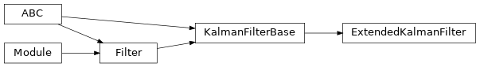

torchfilter.filters._extended_kalman_filter
Private module; avoid importing from directly.
Module Contents
Classes
Generic differentiable EKF. |
- class torchfilter.filters._extended_kalman_filter.ExtendedKalmanFilter(*, dynamics_model: DynamicsModel, measurement_model: KalmanFilterMeasurementModel, **unused_kwargs)[source]
Bases:
torchfilter.base.KalmanFilterBaseGeneric differentiable EKF.
For building estimators with more complex observation spaces (eg images), see
VirtualSensorExtendedKalmanFilter.